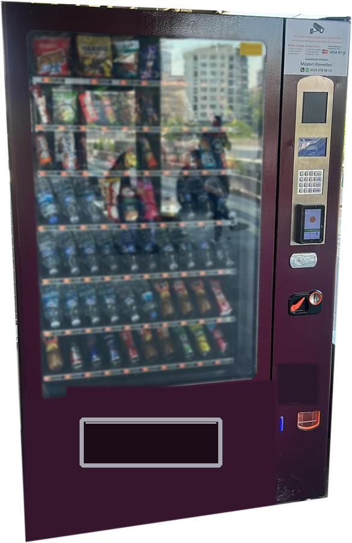

تركيب الآلات
نضع آلاتنا على الأرصفة وعند مداخل المحطات ونقاط التحويل حيث يسهل عليك الوصول إليها.
مشروبات باردة ووجبات خفيفة وتوست وشاي وقهوة في 43 محطة من خلقلي إلى غبزة. في Marmaray Otomat نقدم لعملائنا الكرام منتجات طازجة كل يوم مع طرق دفع سريعة وسهلة.



وجبات خفيفة ومشروبات باردة
تقدم Marmaray Otomat خدمة سريعة وعالية الجودة وموثوقة بآلات بيع حديثة. ومن خلال 126 آلة في جميع محطات مرمراي الـ43 نوصل للمسافرين منتجات طازجة ومتنوعة كل يوم.
توفر آلاتنا على مدار الساعة المشروبات الباردة والوجبات الخفيفة والسندويشات الطازجة يوميًا والتوست والشاي والقهوة، ويمكنك الدفع ببطاقة الائتمان أو البطاقة المصرفية أو QR أو İstanbulkart. ونضع رضا العملاء دائمًا في المقدمة من خلال معايير النظافة والجودة.
Marmaray Otomat هي خدمة من Aykar.
من الأرصفة إلى المداخل، نحن معك في كل نقطة من رحلتك على مرمراي.
نضع آلاتنا على الأرصفة وعند مداخل المحطات ونقاط التحويل حيث يسهل عليك الوصول إليها.
نجدد المشروبات الباردة والوجبات الخفيفة والتوست والمشروبات الساخنة بانتظام. وتصل سندويشاتنا طازجة كل يوم.
نهتم بطلباتك وشكاواك. امسح رمز QR الموجود على الآلة لتصل إلينا خلال ثوانٍ، ونراجع كل بلاغ على حدة.
نتحقق من تواريخ انتهاء الصلاحية ونحافظ على آلاتنا نظيفة ومرتبة.
استخدام آلاتنا يتم في ثلاث خطوات. اختر طريقة الدفع واتبع الخطوات.
أدخل الرقم الموجود على رف المنتج الذي تريده. يظهر المنتج والسعر على الشاشة.
قرّب بطاقة الائتمان من القارئ (بدون تلامس) أو أدخلها. أدخل الرقم السري إذا طُلب منك.
قرّب بطاقتك المصرفية من القارئ (بدون تلامس) أو أدخلها. أدخل الرقم السري إذا طُلب منك.
امسح رمز QR الظاهر على الشاشة بتطبيق البنك على هاتفك وأكّد الدفع.
قرّب بطاقة İstanbulkart من القارئ ليُخصم المبلغ من رصيدك.
بعد تأكيد الدفع يسقط المنتج في الدرج السفلي. إذا حدثت مشكلة، امسح رمز QR الموجود على الآلة واكتب لنا.
الرسوم المتحركة توضيحية فقط؛ قد تبدو شاشة الآلة مختلفة.
لدينا 126 آلة في جميع المحطات الـ43 من خلقلي إلى غبزة: مشروبات باردة ووجبات خفيفة وسندويشات طازجة وتوست ساخن وشاي وقهوة، مع الدفع بالبطاقة أو QR أو İstanbulkart.
اضغط على نقطة في الخط لتعرض الخريطة تلك المحطة.
لم يتم العثور على محطة بهذا الاسم.
اضغط على محطة لتعرضها الخريطة. افتح في خرائط Google
بطاقة الائتمان والبطاقة المصرفية والدفع عبر QR وİstanbulkart. راجع دليل الدفع للشرح خطوة بخطوة.
امسح رمز QR الموجود على الآلة، فتُملأ بيانات المحطة والآلة في النموذج تلقائيًا. أرسل شكواك وسنتحقق منها ونتصل بك.
لا داعي لذلك. لكل آلة رمز QR خاص بها، وعند مسحه تُحدَّد المحطة والآلة تلقائيًا. إذا لم تتمكن من مسح الرمز يمكنك اختيار المحطة وموقع الآلة في النموذج.
تصل سندويشاتنا طازجة كل يوم وتُعبَّأ الآلات يوميًا.
تعمل آلاتنا على مدار الساعة، أما الدخول إلى المحطات فيخضع لساعات تشغيل مرمراي.
استخدم نموذج الاقتراحات. نأخذ اقتراحات المنتجات بعين الاعتبار عند ترتيب رفوفنا.
اكتب لنا إذا واجهت مشكلة مع إحدى آلاتنا أو إذا كان هناك منتج تود رؤيته.
الطريقة الأسرع: امسح رمز QR الموجود على الآلة، فتُحدَّد المحطة والآلة تلقائيًا.


Küçükçekmece / İstanbul
[Açık adres]
ساعات العمل: [أيام الأسبوع 00:00–00:00، السبت 00:00–00:00]